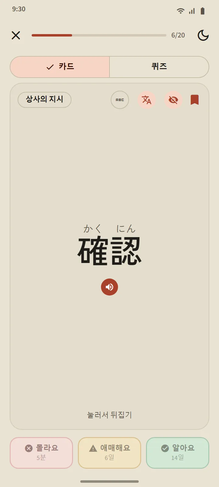
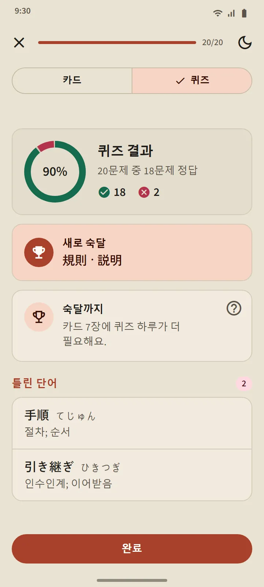
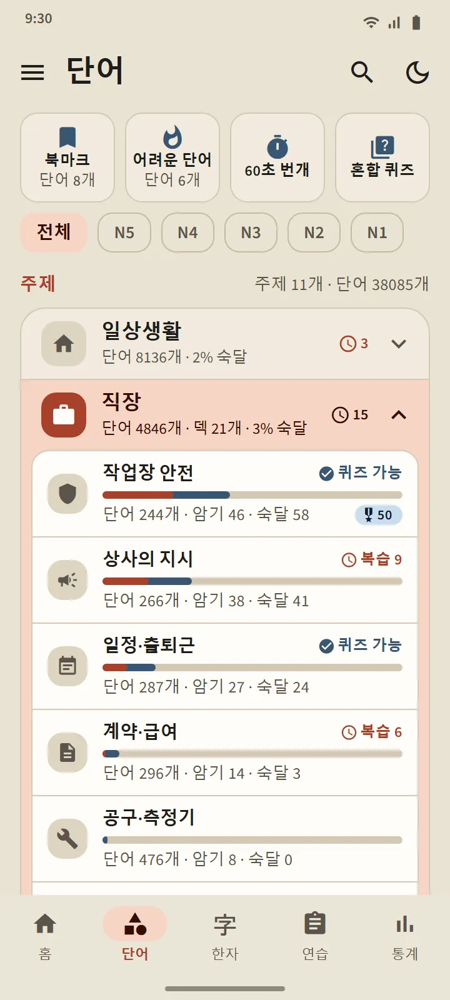
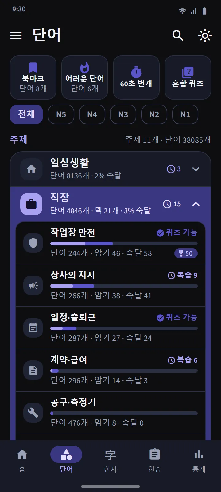
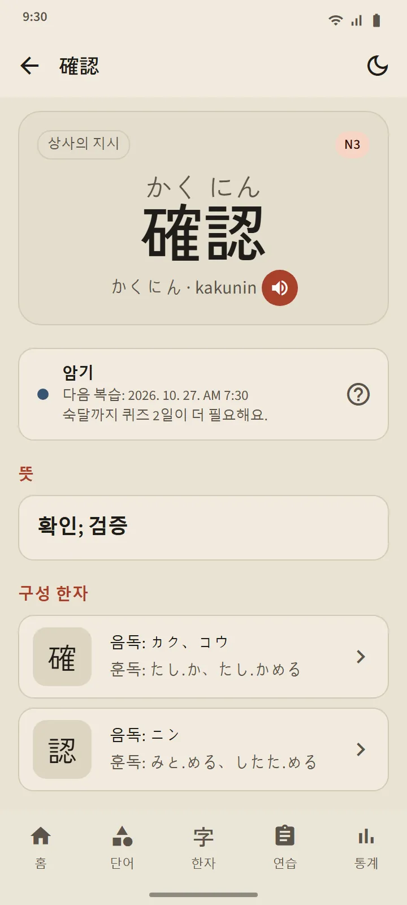

잊어버리기 직전을 아는 카드
카드 앞면에는 단어가 나와요(원하면 후리가나도). 누르면 뒤집혀 읽기, 로마자, 뜻, 구성 한자, 발음 버튼이 보여요. 그런 다음 버튼 세 개 중 하나로 스스로 평가해요.
일정은 최신 플래시카드 앱이 쓰는 간격 반복 알고리즘 FSRS가 잡아요. 버튼마다 단어가 언제 다시 나올지(몇 분, 며칠, 몇 주 뒤) 적혀 있어요. 알아요를 자주 누를수록 간격이 길어져요.
- 몰라요는 어느 단계에서든 단어를 학습 중으로 되돌려요.
- 애매해요는 간격을 줄여요.
- 알아요는 단어를 암기로 올리고 다음 복습을 더 뒤로 미뤄요.


네 단계, 숙달은 증명해야 해요
모든 단어는 신규, 학습 중, 암기, 숙달의 네 단계를 올라가요. 카드에서 알아요를 눌러도 암기까지만 올라가요. 숙달이 되려면 서로 다른 사흘 동안 퀴즈에서 정답을 맞혀야 해요. 숙달한 단어도 복습할 때가 되면 계속 시험하고, 틀리면 내려가요.
덱 퀴즈는 단어 20개가 암기나 숙달이 되면 열려요(작은 덱은 모든 단어를 외우면 바로 열려요). 문제는 단어에서 뜻으로, 뜻에서 단어로 양방향이에요. 마지막에는 새로 숙달한 단어, 한 걸음 남은 단어, 틀린 단어가 나와요.


주제별로 공부하고 모든 단어를 추적해요
단어 탭은 11개 분야로 나뉘고, 분야마다 작은 덱이 들어 있어요. 위쪽 필터로 전체를 JLPT 레벨 하나로 좁힐 수 있어요. 덱마다 화면이 있어서 진행률 링, 단어별 상태가 적힌 목록, 학습 중/암기/숙달 필터, 학습 버튼과 퀴즈 버튼을 볼 수 있어요.
직장 분야에는 일본에서 일할 지원자를 위한 덱 21개가 있어요: 작업장 안전, 상사의 지시, 일정·출퇴근, 계약·급여, 공구·측정기, 물류·창고, 사무·서류, 식품 제조, 요양·돌봄, 공장·생산, 산업 기계, 전자·전기, 건설, 식당·주방, 농업, 조선업, 건물 청소, 어업, 자동차·정비, 항공·공항, 숙박·접객. 일본 생활을 위해서는 교통, 쇼핑과 돈, 집과 가구 덱, 그리고 사회·행정과 신체·건강 분야가 있어요.
| 분야 | 덱 |
|---|---|
| 일상생활 | 16 |
| 직장 | 21 |
| 사회·행정 | 8 |
| 신체·건강 | 8 |
| 성격·감정 | 8 |
| 품사 | 5 |
| 기술·미디어 | 4 |
| 자연·과학 | 10 |
| 학문·의견 | 8 |
| 문화·종교 | 4 |
| 스포츠·게임 | 3 |


특별 덱과 빠른 연습
분야 목록 위에는 모든 덱에서 단어를 모으는 덱 세 개가 있어요: 북마크(별표한 단어), 어려운 단어(카드에서 자꾸 잊거나 퀴즈에서 틀린 단어가 저절로 모임), 60초 번개(1분 안에 넘길 수 있는 만큼의 카드). 네 번째 타일 혼합 퀴즈는 모든 덱의 암기·숙달 단어를 한꺼번에 시험해요.

38,085개 단어를 담은 포켓 사전
상단의 검색 아이콘으로 한자, 가나, 로마자, 뜻으로 어떤 단어든 찾을 수 있어요. 결과는 얼마나 잘 맞는지에 따라 정렬되고, 로마자는 철자가 조금 달라도 찾아요: shinbun과 shimbun, koohii와 kōhī, arigato와 arigatou는 모두 같은 단어를 찾아요. 모든 단어에는 상세 페이지가 있어서 단계와 다음 복습, 뜻, 읽기가 붙은 구성 한자, 발음 버튼을 볼 수 있어요.


레벨과 뜻 언어
단어 레벨은 추정치예요. 일본국제교류기금은 공식 어휘 목록을 공개하지 않기 때문에 예전 JLPT 목록과 사용 빈도로 레벨을 정했어요. 따로 ‘JFT’ 단어 레벨은 없어요. JFT-Basic은 N5·N4와 같은 기초 어휘에 직장 어휘를 더해 시험해요.
뜻은 한국어와 중국어 번체를 포함한 15개 언어로 모두 갖춰져 있어요. 번역 언어는 설정에서 인터페이스 언어와 따로 고를 수 있어요.
| 레벨 | 단어 | 무료 |
|---|---|---|
| N5 | 1,030 | 1,007 |
| N4 | 2,044 | 1,503 |
| N3 | 11,230 | 4,097 |
| N2 | 11,309 | 2,290 |
| N1 | 12,472 | 503 |